为什么要用CNN
- 识别一个图像时，我们可能更关注局部特征，那么每一个神经元不需要连接整个图像，只需要连接一个小的区域
- 同样的特征可能出现在不同的位置
- 对图像进行下采样，并不会改变图像中的物体
其中，第1、3点能减少网络中的参数个数。
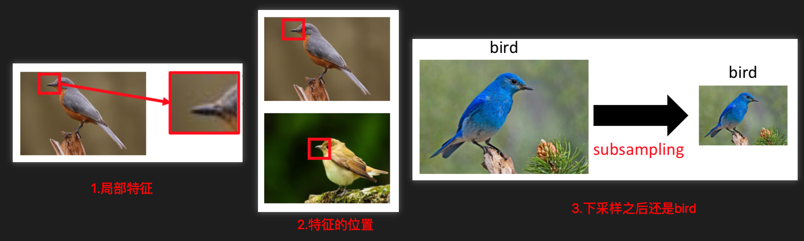
CNN的3个属性
- 有些pattern只占整张图像的很小一部分（通过卷积实现）
- 同样的pattern可能出现在不同的位置（通过卷积实现）
- 下采样不会改变图像中的物体（通过池化实现）
卷积、池化、Flatten
CNN的几个主要操作包括：卷积、池化、Flatten。中间可以选择添加Dropout操作。
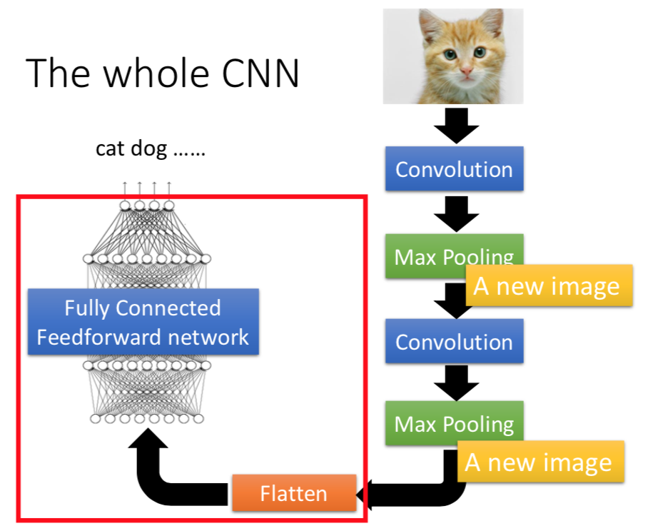
卷积
每一个卷积模板就是一种特征的滤波器，用于探测一种类型的特征。
如下图，卷积模板用于探测『右下斜线』的特征，当图像中出现这种特征的时候，会在卷积结果中体现出来。
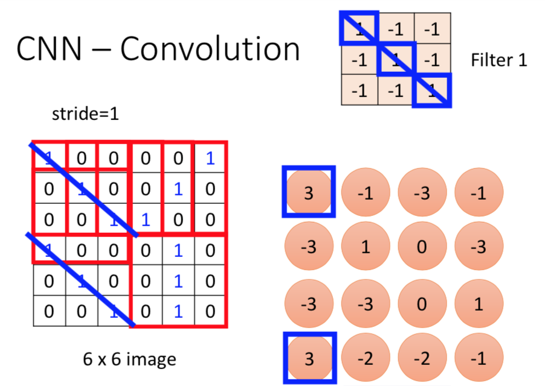
每一个二维的Matrix经过一个模板进行卷积之后的结果为一个『Feature Map』。
经过多个模板卷积之后，结果为多个『Feature Map』，每一个可以看做一个channel。
当输入为彩色图像时，输入的channel为3。经过k个filter卷积之后，得到k个feature map，相当于k个channel。
1 | model.add(Conv2D(50, (3, 3), activation='relu')) |
池化
分Max Pooling、Average Pooling等，一般采用Max Pooling。
后面可以选择地接一个Dropout。1
2model.add(MaxPooling2D(pool_size=(2, 2)))
model.add(Dropout(0.25))
Flatten
在卷积和池化之后，将输出的多维Matrix拉成一个一维的向量。
如下图，向量维度为50*5*5=1250
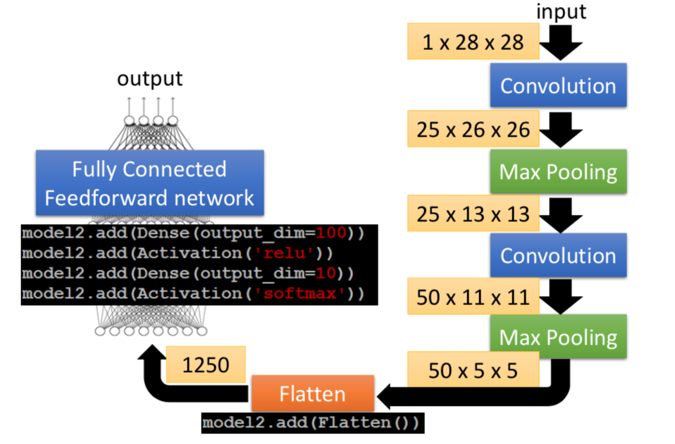
在后面接一个全连接的网络(后面可以选择地接一个Dropout)，再在最后接一个softmax网络。1
2
3
4model.add(Flatten())
model.add(Dense(100, activation='relu'))
model.add(Dropout(0.5))
model.add(Dense(num_classes, activation='softmax'))
卷积层的参数个数与连接数
使用Keras实现CNN：1
2
3
4
5
6
7
8
9
10
11
12model = Sequential()
model.add(Conv2D(25, kernel_size=(3, 3),
activation='relu',
input_shape=input_shape))
model.add(MaxPooling2D(pool_size=(2, 2)))
model.add(Conv2D(50, (3, 3), activation='relu'))
model.add(MaxPooling2D(pool_size=(2, 2)))
model.add(Dropout(0.25))
model.add(Flatten())
model.add(Dense(100, activation='relu'))
model.add(Dropout(0.5))
model.add(Dense(num_classes, activation='softmax'))
如果，卷积模板的大小为h*w，输入通道数为in，输出通道数为out，输出通道的大小为H*W：
注意：这个
in可以理解成卷积核的深度depth，这个深度与前一层的feature map的个数一样。卷积模板的大小可以看作三维h*w*depth
那么，
- 参数个数：
#paras = (h*w*in+1)*out（其中h×w为卷积模板参数，1为偏置参数） - 连接数：
#FLOPS = H*W * #paras
第1个卷积层：
（25个卷积模板，大小为33，输入1个通道，输出为25个通道，输出大小为2626）
- 参数个数：每个filter的参数个数为
3*3+1=10（其中3×3为卷积模板参数，1为偏置参数），共有25*10=250个参数 - 连接数：
250*26*26
第2个卷积层：
（50个卷积模板，大小为33，输入25个通道，输出为50个通道，输出大小为1111）
- 参数个数：每个filter的参数个数为
3*3*25+1=226，共有226*50=11300个参数 - 连接数：
11300*11*11
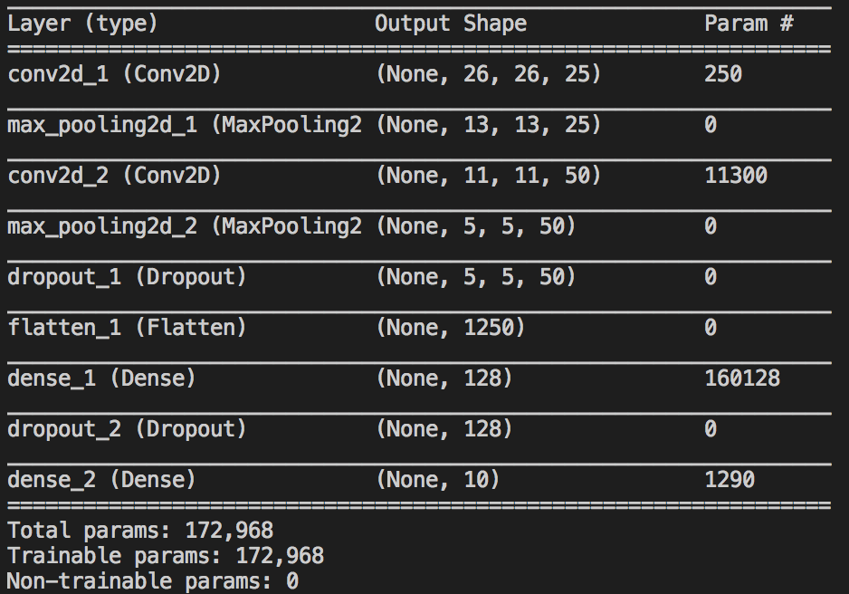
CNN从图像中学到了什么
我们前面有个猜想：每个filter能探测图像中特定的pattern。
那么，反过来想：输入什么样的图像，经过一个filter卷积之后，会使输出值最大。
最大化卷积的输出（feature map）的『输出值的度量』
定义，第k个filter的『输出值的度量』：
$$a^k = \sum_{i=1}^{dim} \sum_{j=1}^{dim} a_{ij}^k$$
我们的目标是寻找最优的输入$x^\ast$，使$a^k$最大：
$$x^\ast = arg \max_x a^k$$
优化方法：梯度下降法得到。
如下图，12个filter分别得到的结果。
可以看到不同的filter能探测不同的局部特征：竖条纹、横条纹、斜条纹等。
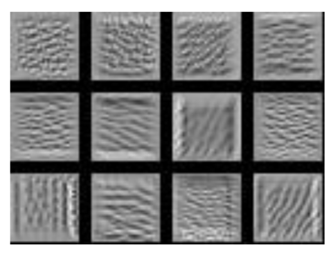
最大化全连接网络的输出
定义，第j个神经元的输出值：$a^j$
目标函数：
$$x^\ast = arg \max_x a^j$$
这个神经元探测的就不是局部特征了，而是全局特征。但是用这种方法做出的效果并不好，图像并不像数字。
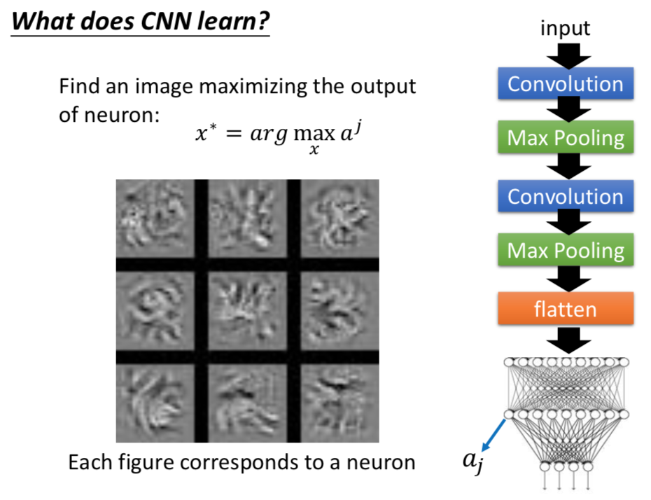
最大化softmax的输出
目标函数：
$$x^\ast = arg \max_x y^i$$
如下图，可以看出，尽管图像看着像『花屏』的图像，但是CNN任然认为这是数字。
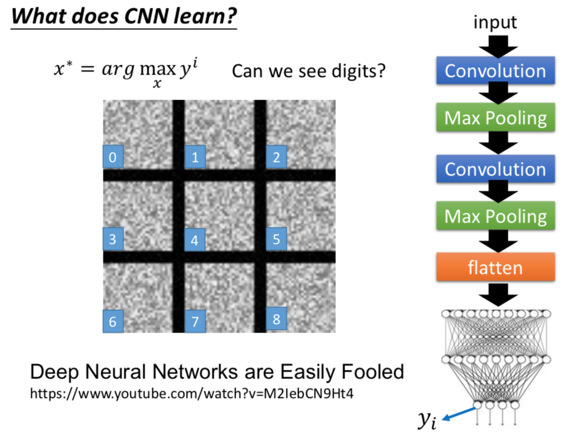
对目标函数加上约束
因为，手写字符的图像中，只有字迹的地方的像素值是大于0的。
所以，我们可以对像素值$x_{i,j}$添加约束条件。
如下图，得到的结果比之前的好多了，比如数字6。
但是结果还不是很好，可以再加一些约束：如相邻的像素具有相同的颜色等。
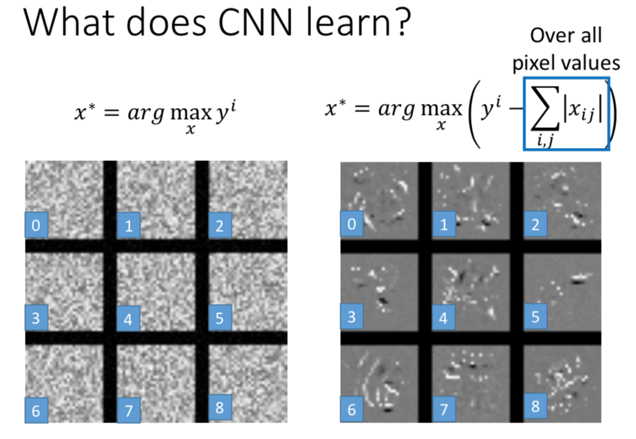
CNN的一些应用
Deep Dram
给定一张图像，机器会加上他看到的东西。(得到的效果很恶心)
步骤：
- 对于一个已经训练好的CNN，输入一张图片，把某个filter的参数或者全连接层的某个神经元的输出调大；
- 把调大后的值作为目标，调整输入图像，使输出更接近目标。
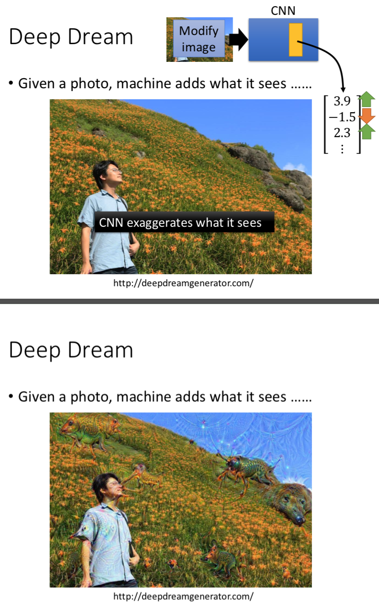
Deep Style
- 一个图像放到CNN中，得到filter的输出，表示图像的content
- 另一个图像放到CNN中，得到filter之间的correlation，表示图像的style
- 用同一个CNN，照一张image，同时使content像左边的图像、style像右边的图像
论文链接 A Neural Algorithm of Artistic Style ：https://arxiv.org/abs/1508.06576
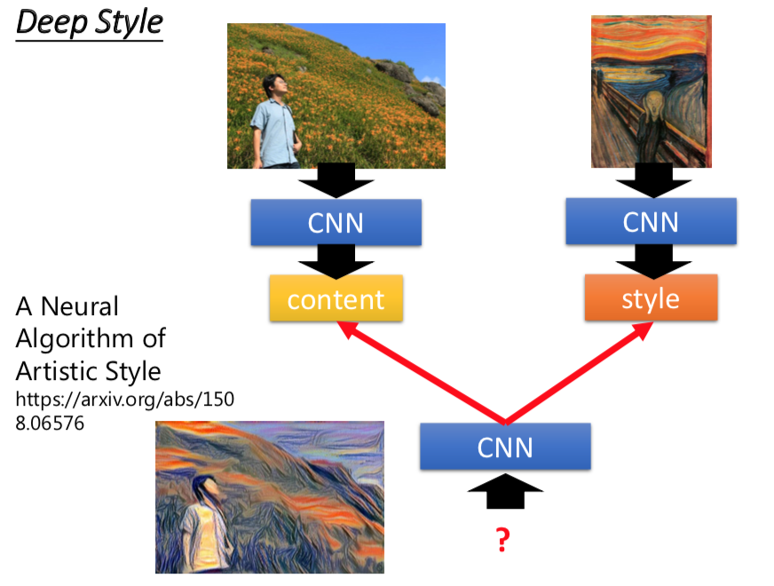
下围棋
用全连接前馈网络也可以，但是用CNN效果更好。
显然地，围棋满足CNN的前两个特点。Alpha GO没使用Max Pooling。
语音处理
声谱图：横坐标是时间，纵坐标是频率。颜色表示频率的能量的强度，红色表示该频率的强度很高。
下面一个图是『你好』的声谱图，左边是『你』，右边是『好』。
使用CNN，对每一段声谱进行分类，卷积移动的方向只沿着频率的方向（从上往下进行卷积）。得到音标，然后连接处理成文本。
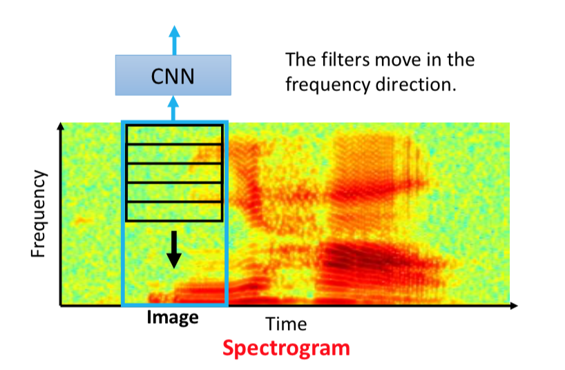
文本处理
把文本当做图像进行处理，横坐标是句子（各个单词），中坐标是单词的word embedding。
这里卷积移动的方向是句子的方向（从左往右）。
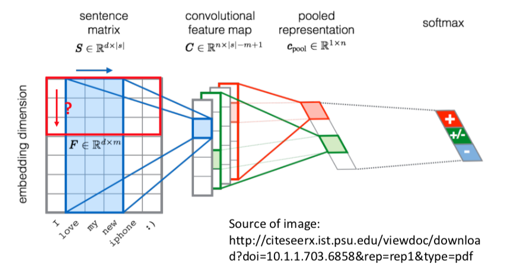
拓展阅读
可视化CNN
- The methods of visualization in these slides
https://blog.keras.io/how-convolutional-neural-networks-see-the-world.html - More about visualization
http://cs231n.github.io/understanding-cnn/ - Very cool CNN visualization toolkit
http://yosinski.com/deepvis
http://scs.ryerson.ca/~aharley/vis/conv/
自动生成图像
- PixelRNN
https://arxiv.org/abs/1601.06759 - Variation Autoencoder(VAE)
https://arxiv.org/abs/1312.6114 - Generative Adversarial Network(GAN)
http://arxiv.org/abs/1406.2661
总结
- 介绍了什么情况下需要用CNN，也就是CNN解决的三个问题。分别是图像中的特征是局部特征、同样的特征可能出现在不同的地方、下采样不影响图像中的物品。
- 介绍了CNN的几个常用操作：卷积、池化、Flatten等
- 通过最大化输出，反推输入。分析CNN从图像中学到了什么。
- 介绍了CNN的几个应用：Deep Style、Alpha GO、语音处理、文本处理。